One Piece
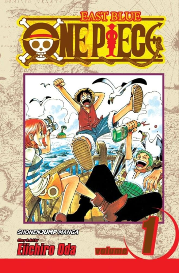Luffy, um jovem cujo corpo ganhou as propriedades de borracha após ter comido um fruto do diabo acidentalmente. Com sua tripulação, os Piratas do Chapéu de Palha, Luffy explora a Grand Line em busca do tesouro mais procurado do mundo, o "One Piece", a fim de se tornar o próximo Rei dos Piratas.
Vinland Saga
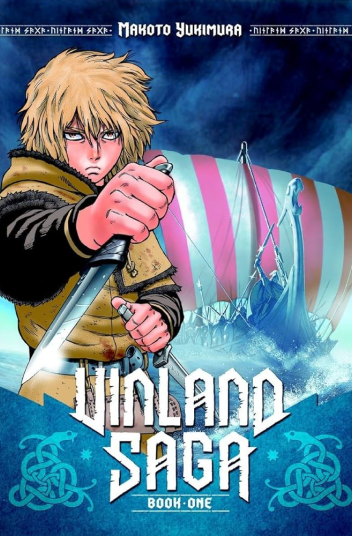O jovem Thorfinn prepara a vingança ao juntar-se ao bando de mercenários do assassino do seu pai, Askeladd, enquanto este mergulha em conspirações políticas.
Slam Dunk
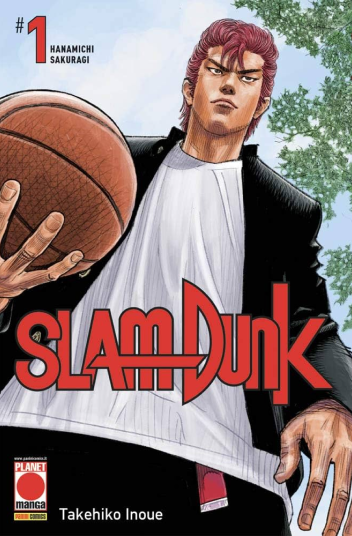Hanamichi Sakuragi é um colegial delinquente de topete ruivo, cansado de tomar fora das garotas que preferem os esportistas! Mas a sua vida começa a mudar quando se apaixona por Haruko, que o convida a jogar basquete no time da escola! Um dos maiores lançamentos do ano e do mesmo autor de Vagabond..
Berserk
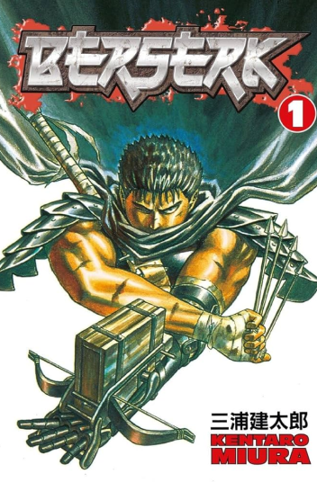O misterioso Guts, o "Espadachim Negro", carrega em sua mão mecânica uma enorme espada, e em seu pescoço uma estranha marca que atrai forças demoníacas. Em sua busca por vingança contra um antigo inimigo, nem tudo sai a seu favor, e ele recebe ajuda de uma fantástica criatura.
Jumyou wo Kaitotte
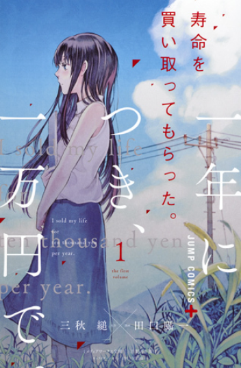Jumyou wo Kaitotte Moratta. Ichinen ni Tsuki, Ichimanen de. ("Eu vendi minha vida por 10 mil yene o ano") é um mangá baseado no romance "Três dias de felicidade" de Miyaki Sugaru, e conta a história de Kusunoki, um jovem com poucas espectativas para o futuro, que com 20 anos chegou ao fundo do poço.
Grand Blue
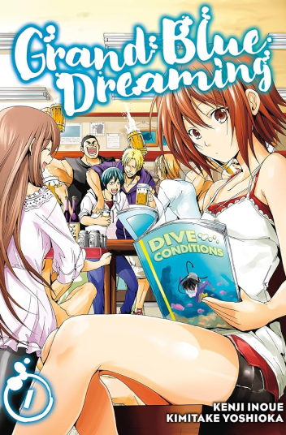Quando Iori Kitahara vai para a faculdade, ele decide morar na Azul Grandioso, a loja de mergulho de seu tio em Izu. Iori quer vivenciar a vida na faculdade cercado pelo estrondo das ondas, sol ardente e sua prima fofinha que mora com ele!
One Punch Man
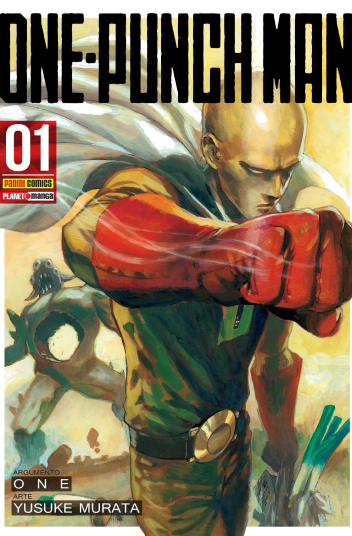One Punch Man acompanha Saitama, um jovem oficial incrivelmente forte que possui a força necessária para derrotar vilões com um único soco. Devido à sua incomparável força, ele se tornou entediado e busca por adversários que possam igualmente contra ele.
Jojo Part 7
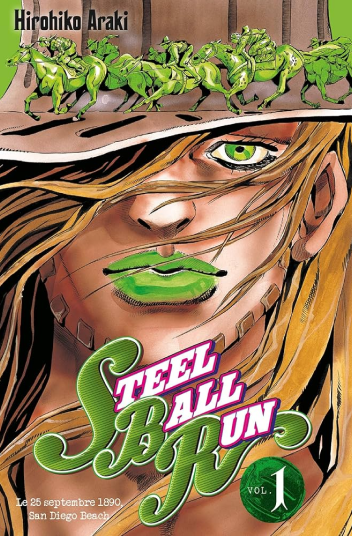Os protagonistas são Gyro Zeppeli, um mestre da técnica única de Spin em busca do prêmio em dinheiro e Johnny Joestar, um ex-jóquei paraplégico que busca curar suas pernas através do Spin, ambos cooperando para vencer a corrida.
Eyeshield 21
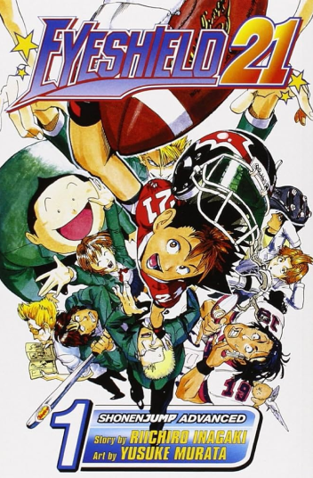A série conta a história de Sena Kobayakawa, um garoto introvertido que acaba entrando para o clube de futebol americano. Embora entre para o clube como secretário, ele, após ser coagido por Yoichi Hiruma, o capitão da equipe, acaba por jogar usando uma viseira e o número 21, sob o pseudônimo de "Eyeshield 21".
H2
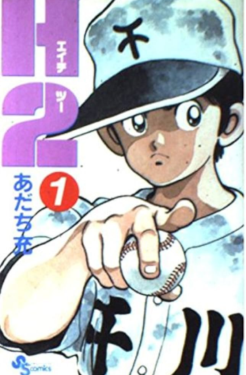Hiro tem dois amores: beisebol e pornografia. Mas devido a uma lesão no cotovelo, ele desiste do beisebol, escolhendo uma escola sem time de beisebol. Seu amigo de infância, Hikari, estuda em uma escola diferente com o craque do beisebol Hideo e os dois gostariam que Hiro não tivesse desistido do beisebol. Hiro entra para o time de futebol, mas conhece Haruka, uma garota muito desajeitada, que é gerente do clube de beisebol não oficial. Quando o time de futebol desafia o clube de beisebol para um jogo, na esperança de humilhá-los, o clube de beisebol quase perde até que Hiro, enojado com a arrogância do time de futebol, muda para o clube de beisebol.
Real
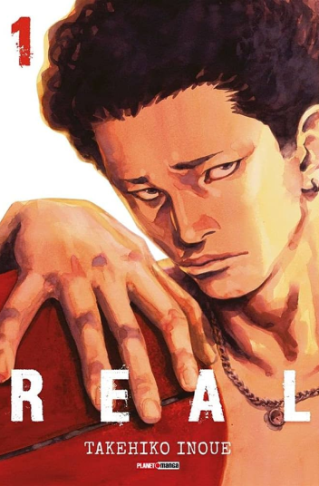Tomomi Nomiya, ex-capitão do time de basquete de sua escola que se tornou delinquente, decide abandonar a escola depois de ser esmagado pela culpa de ter arruinado a vida de uma jovem em um acidente de trânsito. Ao dedicar seu tempo livre para ajudá-la, ele se depara com Kiyoharu Togawa, um ex-velocista que perdeu o uso da perna direita e agora joga basquete em cadeira de rodas como alternativa. Depois de desafiar Kiyoharu para um jogo um contra um, Tomomi é completamente derrotado. Inspirado por esse encontro, ele percebe que não pode deixar seu amor pelo basquete morrer tão facilmente e decide que fará o que puder para ajudar os outros enquanto se esforça para se tornar um jogador profissional. Enquanto isso, Hisanobu Takahashi, o substituto de Tomomi como capitão do time da escola, sofre um acidente e fica permanentemente paralisado abaixo da cintura. Real conta a comovente história desses três jovens enquanto eles lutam para superar suas deficiências e conflitos internos para realizar seus sonhos e, ao mesmo tempo, despertar uma paixão que os unirá.
Gash Bell
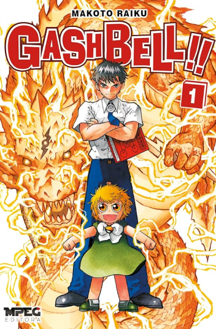Kiyomaro Takamine, um gênio do ensino médio, é saudado certa manhã por Gash Bell, um garoto com um misterioso livro vermelho. Incumbido por seu pai de decifrá-lo, Kiyomaro logo descobre que Gash não é um garoto comum. Capaz de disparar raios de sua boca ao entoar uma palavra, Gash é uma criança demoníaca – parte de uma guerra que ocorre a cada 1000 anos para decidir o Rei Demônio. Com Kiyomaro sendo o único que pode ler o livro de Gash, o dever de parceiro é imposto a ele nesta emocionante história de amizade, determinação e melões...?
Rookies
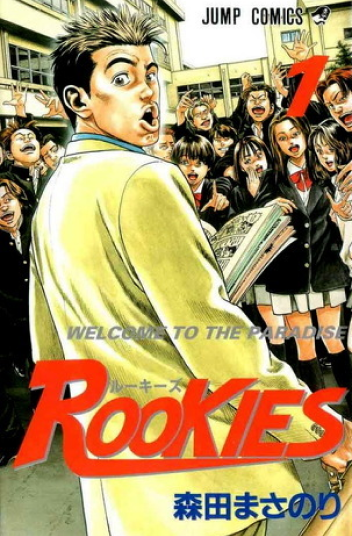O professor Kawato é o novo professor de japonês na famosa escola Futagotamaga, cujo clube de beisebol é composto por bandidos e valentões que foram suspensos por um ano de todas as competições escolares por causarem uma briga durante uma partida oficial. Agora que a suspensão acabou, os únicos membros restantes do clube estão interessados apenas em mulheres, fumando e não fazendo nada até que, sob a orientação do professor Kawato, descobrem um novo sonho chamado Koushien. O caminho para Koushien está longe de ser fácil, pois eles precisam voltar à forma, aprender a jogar beisebol e conquistar a desconfiança de todos, inclusive do diretor e de outros professores, com apenas alguns meses disponíveis. Suando e lutando, o clube de beisebol encontrará sua determinação e força à medida que avança em direção aos seus sonhos, enquanto os modos entusiasmados e não convencionais de Kawato mudam lentamente a atitude de todos que estão perto deles.
Soul Eater
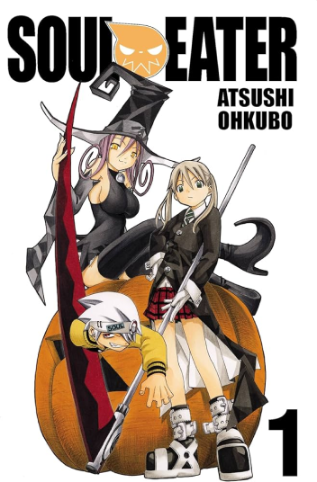Death City é o lar da Death Weapon Meister Academy, fundada por Shinigami – o próprio ceifador. Criada para manter a paz, a academia treina Meisters e Demon Weapons – pessoas que assumem a forma de uma arma – para defender a humanidade contra o mal. O objetivo final de um Meister é criar uma "Foice da Morte" digna de ser empunhada por Shinigami. Para fazer isso, seu parceiro armado deve consumir as almas de 99 humanos perversos e uma bruxa.
Fire Punch
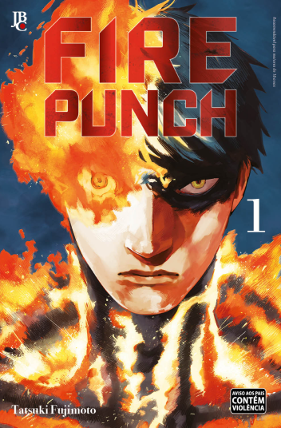Num mundo devastado pelo gelo e pela neve, a civilização está à beira do colapso, graças à esquiva Bruxa do Gelo. A luta contra o frio trouxe à tona o que há de pior na humanidade, levando a cultos, à violência e à perseguição dos “abençoados” – aqueles que nasceram com poderes sobrenaturais. Agni e Luna – órfãos abençoados com poderes regenerativos – estão tirando o melhor proveito de sua situação dentro de uma pequena sociedade de idosos; o afeto que sentem um pelo outro serve como uma distração do clima inabitável. No entanto, a pouca serenidade que têm é roubada quando o comandante do exército Doma passa e incinera a aldeia onde procuram refúgio - incluindo a amada irmã de Agni. As chamas de Doma não se extinguem até que seu alvo seja reduzido a cinzas e, devido à notável regeneração de Agni, ele permanece em chamas e com uma dor constante e insuportável.
The Horizon
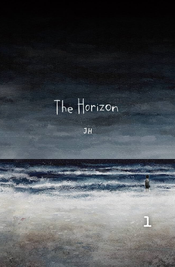Num mundo devastado pela guerra, um menino caminha por uma estrada solitária após a morte de sua mãe. Ao longo de sua jornada, ele testemunha tanques militares, cadáveres e sua amada cidade em ruínas. Com os olhos nublados pela angústia, ele se esforça para seguir em frente. Certa manhã, ele conhece uma garota em um ônibus abandonado onde passou a noite. Momentos após o encontro, a área se transforma em um campo de batalha e a dupla escapa para uma longa estrada abandonada. Os dois estranhos decidem caminhar juntos até o fim da estrada, iniciando assim uma companhia que acenderá uma nova esperança em seus corações murchos.